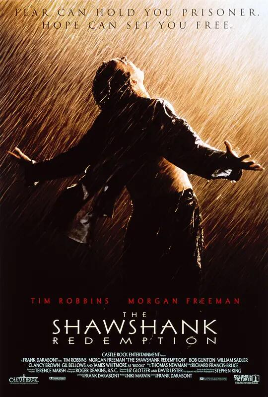
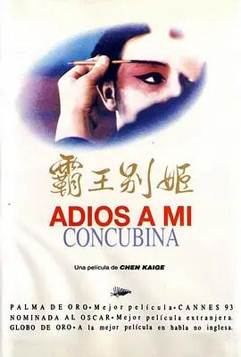
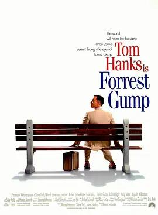
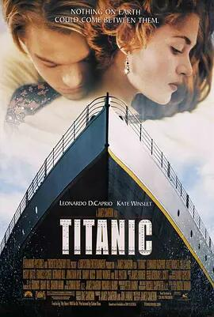
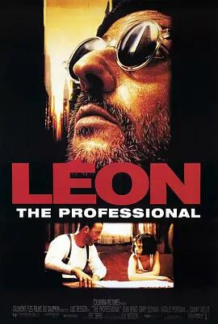

想来点电影看吧，这里是我精心给你挑选的5部电影！
豆瓣TOP5电影
肖申克的救赎

《肖申克的救赎》（The Shawshank Redemption）是由弗兰克·达拉邦特执导，蒂姆·罗宾斯、摩根·弗里曼等主演。
该片改编自斯蒂芬·金《四季奇谭》中收录的同名小说，该片中涵盖全片的主题是“希望”，全片透过监狱这一强制剥夺自由、高度强调纪律的特殊背景来展现作为个体的人对“时间流逝、环境改造”的恐惧。影片的结局有《基督山伯爵》式的复仇宣泄。
在IMDB当中被超过160万以上的会员选为250佳片中第一名。并入选美国电影学会20世纪百大电影清单。
“希望让人自由。”
霸王别姬

《霸王别姬》是汤臣电影有限公司出品的文艺片，该片改编自李碧华的同名小说，由陈凯歌执导，李碧华、芦苇编剧；张国荣、巩俐、张丰毅领衔主演。
影片围绕两位京剧伶人半个世纪的悲欢离合，展现了对传统文化、人的生存状态及人性的思考与领悟。1993年该片在中国内陆以及中国香港上映，此后在世界多个国家和地区公映，并且打破中国内陆文艺片在美国的票房纪录。
1993年该片荣获法国戛纳国际电影节最高奖项金棕榈大奖，成为首部获此殊荣的中国影片；此外这部电影还获得了美国金球奖最佳外语片奖、国际影评人联盟大奖等多项国际大奖。1994年张国荣凭借此片获得第4届中国电影表演艺术学会特别贡献奖。2005年《霸王别姬》入选美国《时代周刊》评出的“全球史上百部最佳电影”。
“风华绝代。”
阿甘正传

《阿甘正传》是由罗伯特·泽米吉斯执导的电影，由汤姆·汉克斯、罗宾·怀特等人主演，于1994年7月6日在美国上映。电影改编自美国作家温斯顿·格卢姆于1986年出版的同名小说，描绘了先天智障的小镇男孩福瑞斯特·甘自强不息，最终“傻人有傻福”地得到上天眷顾，在多个领域创造奇迹的励志故事。电影上映后，于1995年获得奥斯卡最佳影片奖、最佳男主角奖、最佳导演奖等6项大奖。
“一部美国近现代史。”
泰坦尼克号

《泰坦尼克号》是美国二十世纪福斯电影公司、派拉蒙影业公司出品爱情片，由詹姆斯·卡梅隆执导，莱昂纳多·迪卡普里奥、凯特·温斯莱特领衔主演。影片以1912年泰坦尼克号邮轮在其处女启航时触礁冰山而沉没的事件为背景，讲述了处于不同阶层的两个人穷画家杰克和贵族女露丝抛弃世俗的偏见坠入爱河，最终杰克把生命的机会让给了露丝的感人故事。
“失去的才是永恒的。”
这个杀手不太冷

《这个杀手不太冷》是由吕克·贝松编剧并执导，让·雷诺、加里·奥德曼、娜塔丽·波特曼主演的动作片，该片于1994年9月14日在法国上映。该片讲述了一名职业杀手莱昂无意间搭救了一个全家被杀害的小女孩玛蒂尔达，他和小女孩互生情愫，最后他为了救玛蒂尔达而身亡的故事。
“怪蜀黍和小萝莉不得不说的故事。”